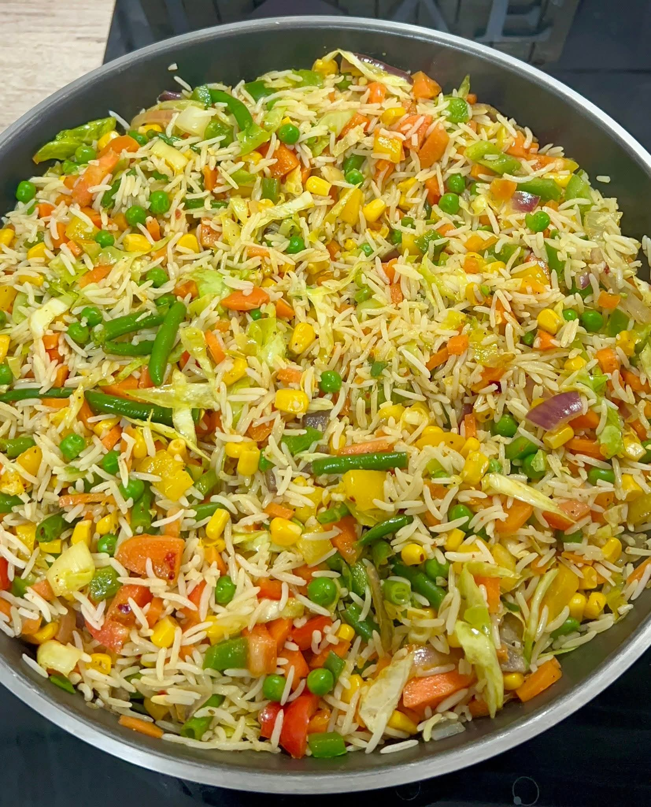
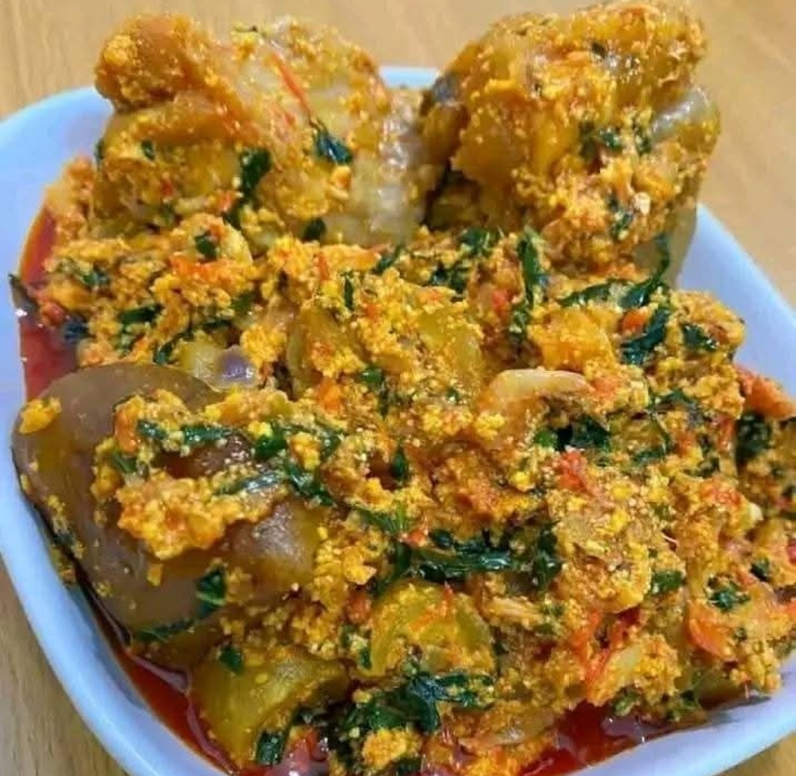
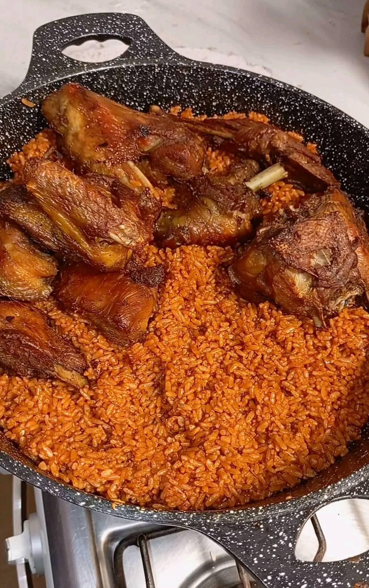
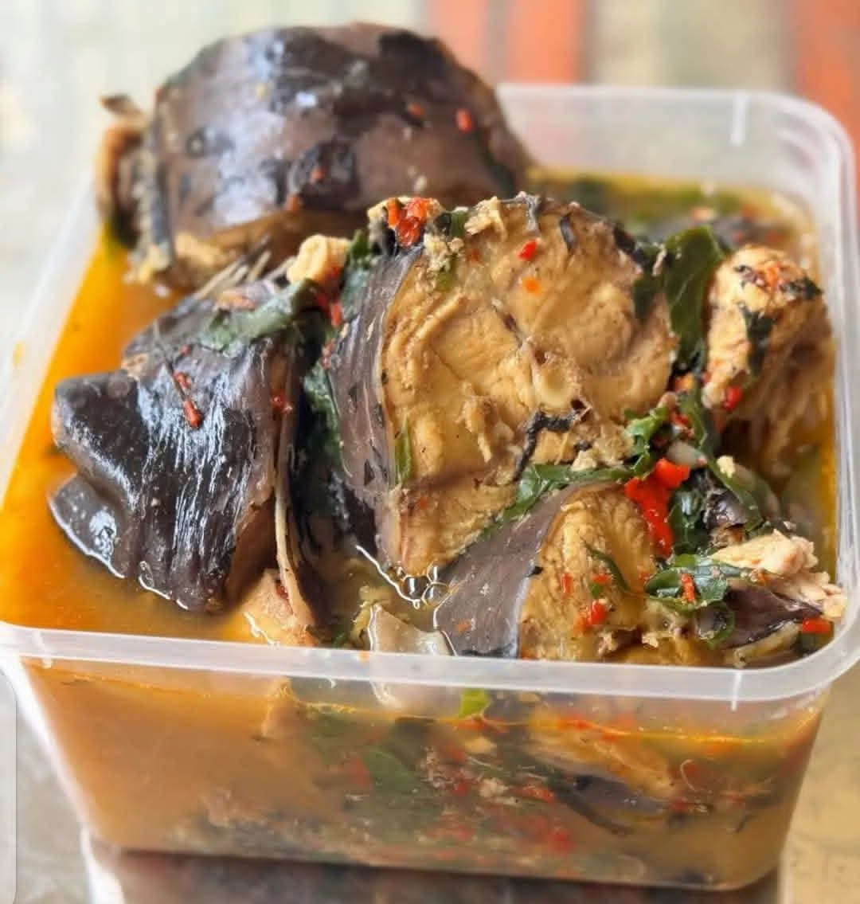
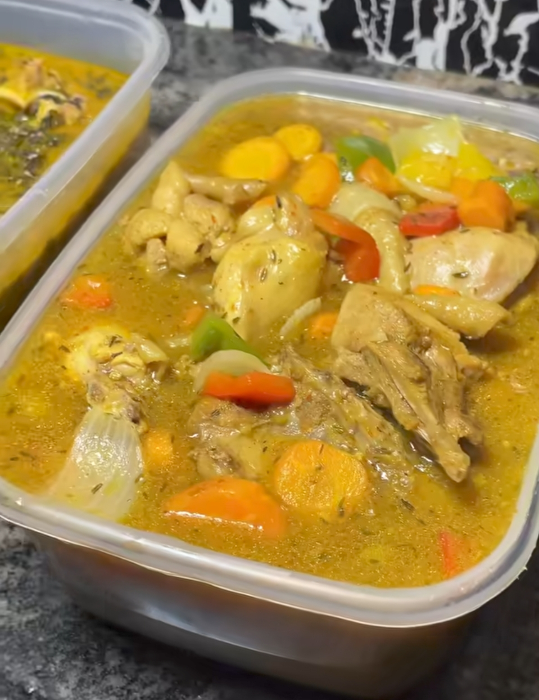
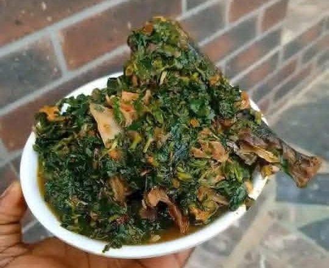
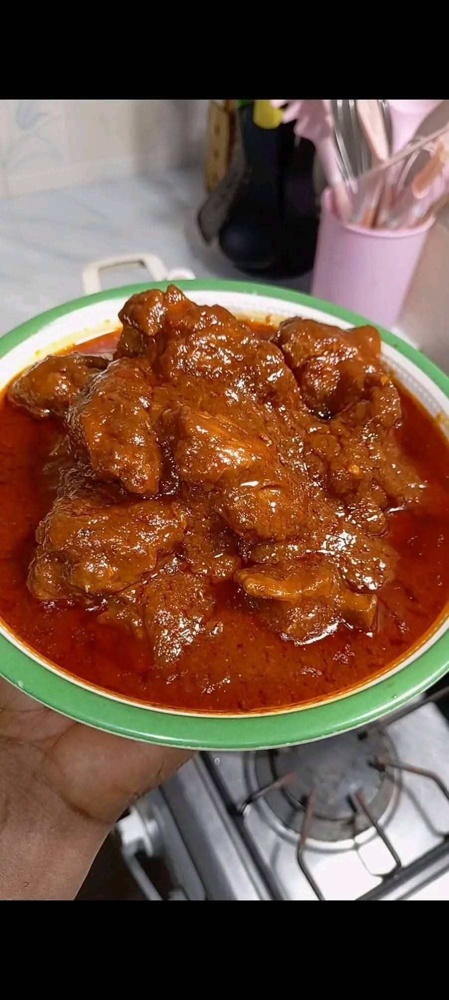
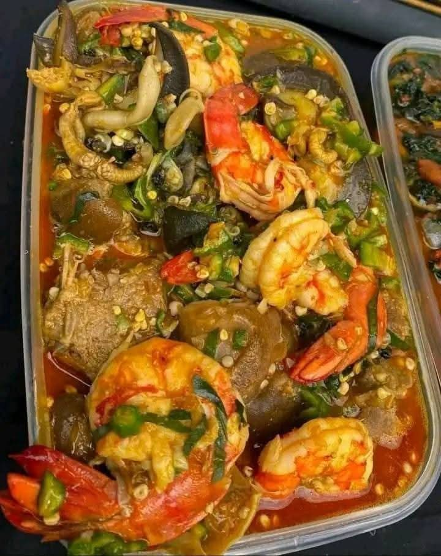
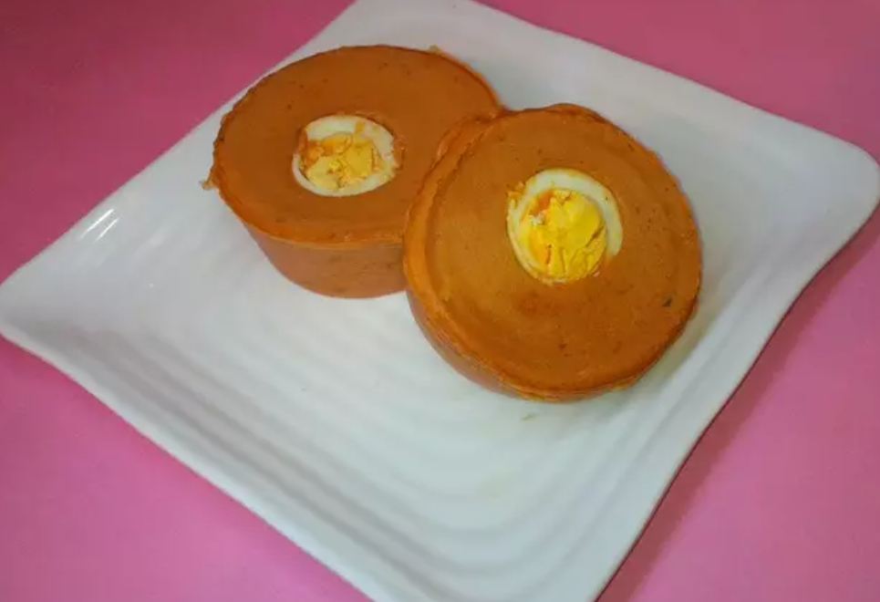
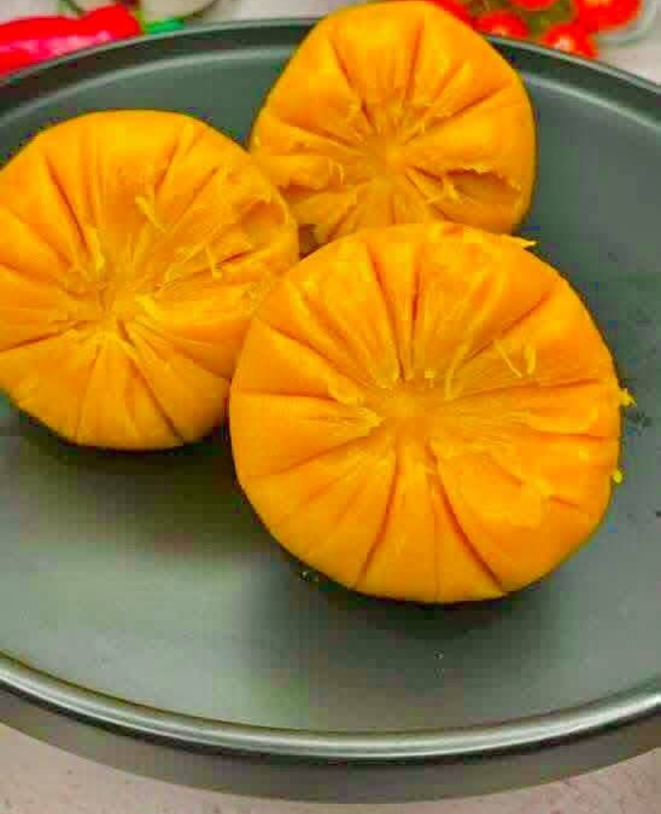

Fried Rice
A flavorful and colorful rice dish cooked with vegetables, spices, and protein.
Ingredients & steps to cookExplore some simple meal you can cook at home

A flavorful and colorful rice dish cooked with vegetables, spices, and protein.
Ingredients & steps to cook
A rich Nigerian food made with melon seeds and vegetables.
Ingredients & steps to cook
A classic West African dish made with rice cooked in a rich tomato and pepper mix.
Ingredients & steps to cook
A spicy and flavorful catfish pepper soup, perfect for warming the soul.
Ingredients & steps to cook
A rich and savory chicken sauce made with tender chicken pieces and vegetables.
Ingredients & steps to cook
A nutrients and flavorful stew made with fresh vegetables and a rich tamoto base.
Ingredients & steps to cook
A rich and classic tomato stew made with a well-seasoned tomato and pepper sauce.
Ingredients & steps to cook
A delicoius and slightly slimy soup made with fresh okra and rich Seasonings.
Ingredients & steps to cook
A soft and savory steamed bean pudding made from blended beans and spices.
Ingredients & steps to cook
A traditional Eastern Nigerian dish made from bambara nut flour. Perfect for breakfast.
Ingredients & steps to cook